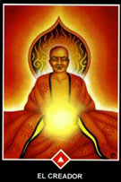

En la sección Mundo Ancestral hay una pequeña reseña de este gran
maestro de la iluminación que nos dejará tantos mensajes para la
evolución del ser, tengo que reconocer públicamente que además del
tarot egipcio el tarot de Osho es una herramienta que calificó de
excelente en la búsqueda de la luz.
El "Tarot Osho Zen" no es un tarot como los demás. No se orienta hacia
el pasado o el futuro, como otros, sino que se centra en captar y
comprender el aquí y el ahora. Está basado en la sabiduría Zen, la
cual afirma que los sucesos del mundo exterior son siempre un reflejo
de lo que pensamos o sentimos incluso cuando no somos conscientes de
nuestros pensamientos o nuestros sentimientos.
En consecuencia, el tarot nos ayuda a apartar nuestra atención de
los acontecimientos externos para así poder encontrar una nueva
claridad a través de la comprensión de lo que aquí y ahora está
ocurriendo en nuestro fuero interno. En este TAROT OSHO ZEN, está la
carta de El Maestro, la que nos permite dejar atrás la espiral y dar
un salto fuera de la rueda de muerte y renacimiento. El Maestro
simboliza la trascendencia suprema de la travesía en sí misma,
una trascendencia que se hace posible únicamente cuando el ego
individual y separado se disuelve en la iluminación.
En definitiva, el TAROT OSHO ZEN, no es un tarot tradicional en el
sentido de jugar en base a predicciones. Es más bien un juego trascendental
zen que refleja el momento, mostrando constantemente lo que hay aquí y ahora,
sin juicio ni comparación. Este juego es una llamada a despertar, a
sintonizar con la sensibilidad, la intuición, la receptividad, el
coraje y la individualidad.
En este momento hay muchísimos tarot y oráculos a continuación menciono
algunos de ellos.